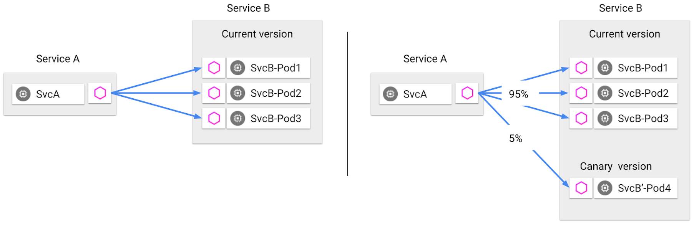
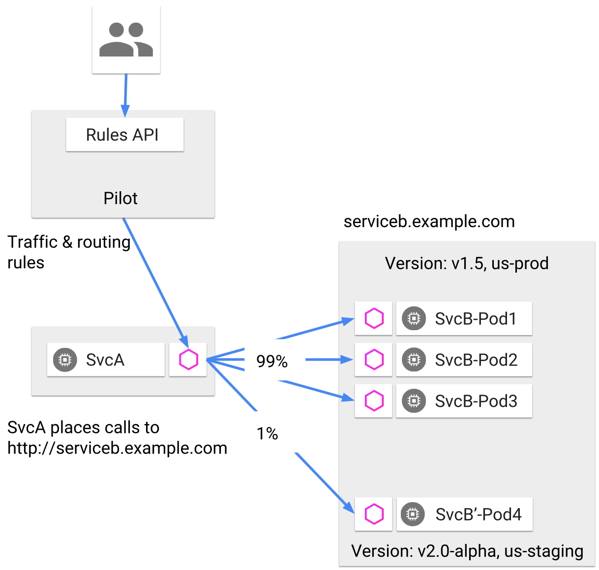
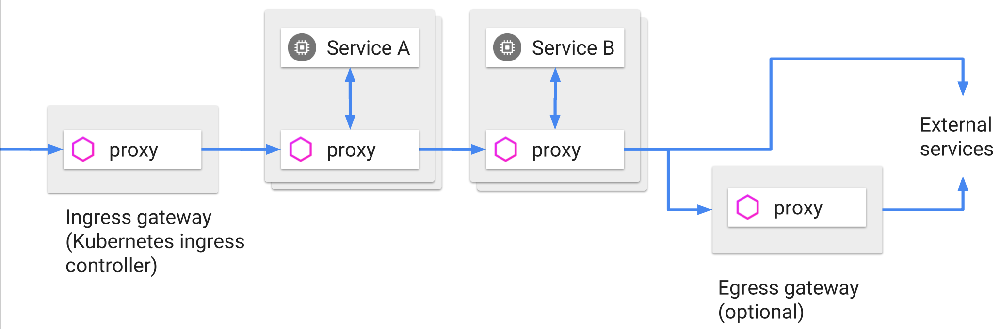
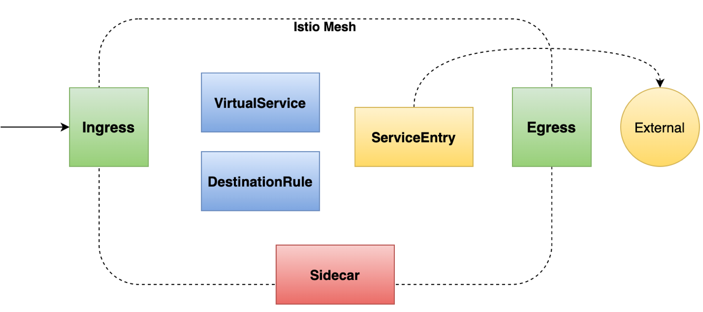

功能
作为一款开源的 Service Mesh 产品，Istio 提供了 流量控制 、 安全 、 监控 等方面能力
它为微服务应用提供了一个较为完整的服务治理解决方案，并且可以以统一的方式去管理和监测微服务 这些能力几乎都是对业务代码透明的，不需要修改或者只需要少量修改就能实现 接下来会对 Istio 的三大方面的功能做详细介绍
流量控制
微服务应用最大的痛点就是处理服务间的通信，而这一问题的核心其实就是流量管理
首先来看看传统的微服务应用在没有 Service Mesh 介入的情况下，是如何完成诸如金丝雀发布这样的路由功能的
假设不借助任何现成的第三方框架，一个最简单的实现方法，就是在服务间添加一个负载均衡（比如 Nginx）做代理，通过修改配置的权重来分配流量
这种方式使得对流量的管理和基础设施绑定在了一起，难以维护
而使用 Istio 就可以轻松的实现各种维度的流量控制。下图是典型的金丝雀发布策略：根据权重把 5% 的流量路由给新版本，如果服务正常，再逐渐转移更多的流量到新版本

Istio 中的流量控制功能主要分为三个方面：
- 请求路由和流量转移
- 弹性功能，包括熔断、超时、重试
- 调试能力，包括故障注入和流量镜像
路由和流量转移
Istio 为了控制服务请求，引入了 服务版本 （version）的概念，可以通过版本这一标签将服务进行区分：
- 版本的设置是非常灵活的：
- 可以根据服务的迭代编号进行定义（如 v1、v2 版本）
- 也可以根据部署环境进行定义（比如 dev、staging、production）
- 或者是自定义的任何用于区分服务的某种标记
通过版本标签，Istio 就可以定义灵活的路由规则来控制流量，上面提到的金丝雀发布这类应用场景就很容易实现了。下图展示了使用服务版本实现路由分配的例子： 服务版本定义了版本号（v1.5、v2.0-alpha）和环境（us-prod、us-staging）两种信息 服务 B 包含了 4 个 Pod，其中 3 个是部署在生产环境的 v1.5 版本，而 Pod4 是部署在预生产环境的 v2.0-alpha 版本 运维人员可以根据服务版本来指定路由规则，使 99% 的流量流向 v1.5 版本，而 1% 的流量进入 v2.0-alpha 版本

除了上面介绍的服务间流量控制外，还能控制与网格边界交互的流量。可以在系统的入口和出口处部署 Sidecar 代理，让所有流入和流出的流量都由代理进行转发。负责入和出的代理就叫做 入口网关 和 出口网关 ，它们把守着进入和流出网格的流量。下图展示了 Ingress 和 Egress 在请求流中的位置，有了他们俩，也就可以控制出入网格的流量了：

Istio 还能设置 流量策略 。比如可以对连接池相关的属性进行设置，通过修改最大连接等参数，实现对请求负载的控制。还可以对负载均衡策略进行设置，在轮询、随机、最少访问等方式之间进行切换。还能设置异常探测策略，将满足异常条件的实例从负载均衡池中摘除，以保证服务的稳定性
弹性功能
除了最核心的路由和流量转移功能外，Istio 还提供了一定的弹性功能，目前支持 超时 、 重试 和 熔断 ：
- 超时就是设置一个等待时间，当上游服务的响应时间超过这个时间上限，就不再等待直接返回，就是所谓的快速失败。超时主要的目的是控制故障的范围，避免故障进行扩散
- 重试一般是用来解决网络抖动时通信失败的问题。因为网络的原因，或者上游服务临时出现问题时，可以通过重试来提高系统的可用性
在 Istio 里添加超时和重试都非常简单，只需要在路由配置里添加 timeout 和 retry 这两个关键字就可以实现
- 另外一个重要的弹性功能是熔断，它是一种非常有用的过载保护手段，可以避免服务的级联失败。熔断一共有三个状态：
- 当上游服务可以返回正常时，熔断开关处于关闭状态
- 一旦失败的请求数超过了失败计数器设定的上限，就切换到打开状态，让服务快速失败
- 熔断还有一个半开状态，通过一个超时时钟，在一定时间后切换到半开状态，让请求尝试去访问上游服务，看看服务是否已经恢复正常
- 如果服务恢复就关闭熔断，否则再次切换为打开状态
Istio 里面的熔断需要在自定义资源 DestinationRule 的 TrafficPolicy 里进行设置
调试能力
Istio 还提供了对流量进行调试的能力，包括 故障注入 和 流量镜像
对流量进行调试可以让系统具有更好的容错能力，也方便在问题排查时通过调试来快速定位原因所在
故障注入
简单来说，故障注入就是在系统中人为的设置一些故障，来测试系统的稳定性和系统恢复的能力
比如给某个服务注入一个延迟，使其长时间无响应，然后检测调用方是否能处理这种超时而自身不受影响（比如及时的终止对故障发生方的调用，避免自己被拖慢、或让故障扩展）
Isito 支持注入两种类型的故障：
- 延迟：模拟网络延迟或服务过载的情况
- 中断：模拟上游服务崩溃的情况，以 HTTP 的错误码和 TCP 连接失败来表现
Istio 里实现故障注入很方便，在路由配置中添加fault关键字即可
流量镜像
流量镜像又叫影子流量，就是通过复制一份请求并把它发送到镜像服务，从而实现流量的复制功能。流量镜像的主要应用场景有以下几种：
- 最主要的就是进行线上问题排查。一般情况下，因为系统环境，特别是数据环境、用户使用习惯等问题，很难在开发环境中模拟出真实的生产环境中出现的棘手问题，同时生产环境也不能记录太过详细的日志，因此很难定位到问题。有了流量镜像，我们就可以把真实的请求发送到镜像服务，再打开 debug 日志来查看详细的信息
- 可以通过它来观察生产环境的请求处理能力，比如在镜像服务进行压力测试
- 可以将复制的请求信息用于数据分析
流量镜像在 Istio 里实现起来也非常简单，只需要在路由配置中通添加mirror关键字即可
实现流量控制的自定义资源
Istio 里用于实现流量控制的 CRD 主要有以下几个：
- VirtualService：用于网格内路由的设置
- DestinationRule：定义路由的目标服务和流量策略
- ServiceEntry：注册外部服务到网格内，并对其流量进行管理
- Ingress、Egress gateway：控制进出网格的流量
- Sidecar：对 Sidecar 代理进行整体设置

Istio 通过这些自定义资源，实现了对网格内部、网格外部、进出网格边界的流量的全面的控制。也就是说所有和网格产生交互的流量都可以被 Istio 所控制，其设计思路堪称完美
总结
- 流量控制是 Service Mesh 最核心的功能，也是服务治理最主要的手段之一
- Istio 从路由、弹性和调试三个方面提供了丰富的流量控制功能，可以对微服务应用进行全面的流量治理
- 用于实现流量控制的自定义资源主要包括：
- VirtualService
- DestinationRule
- ServiceEntry 等